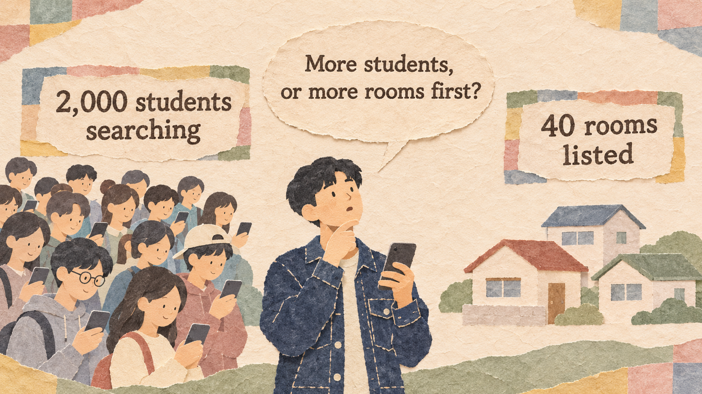
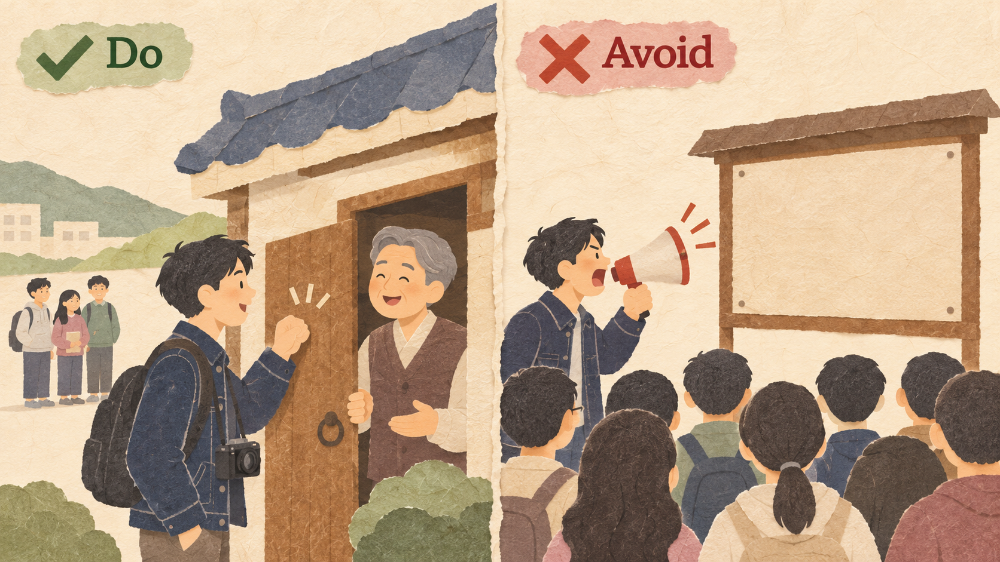
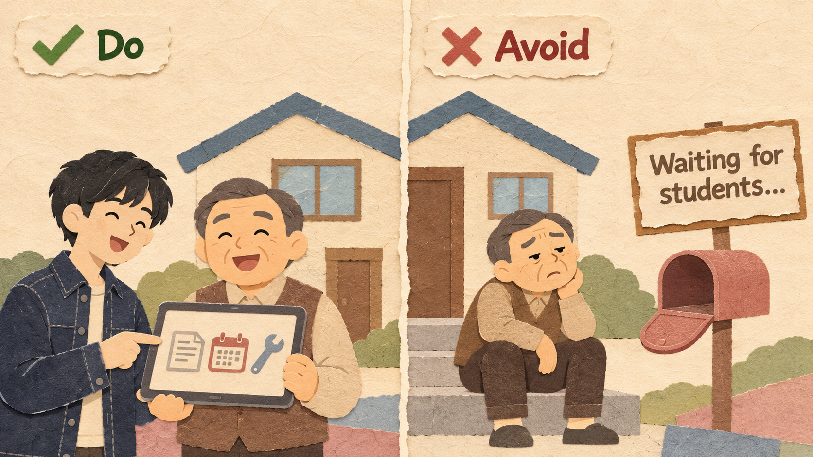
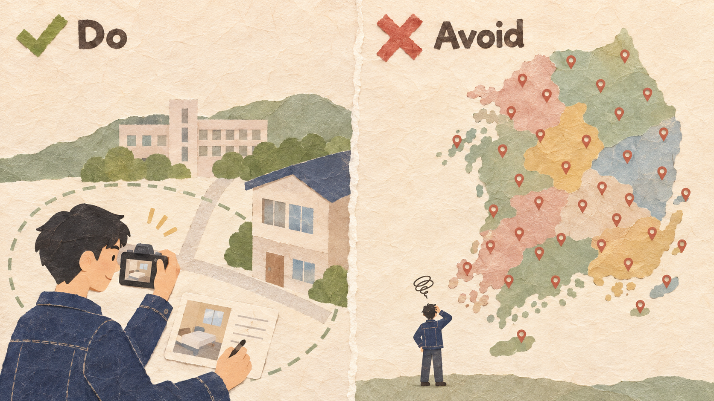
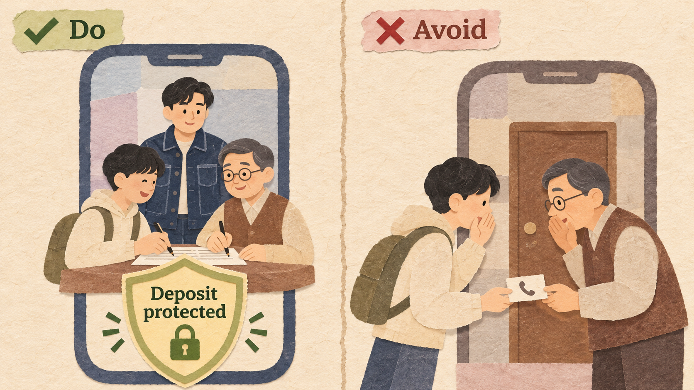

RoomLink is Kenji's app that connects students who need a room near campus with local landlords. Students use it for free; the landlord pays $150 when a room is rented. Most students found nothing and left.
| ROOMLINK (THIS SEMESTER) | VALUE |
|---|---|
| Students searching for a room | 2,000 |
| Rooms listed / rented through RoomLink | 40 / 24 (60%) |
| Students who found nothing and left | 1,200 |
| Landlords within 2 km of campus | 300 |
| Fee per room rented / money for two semesters | $150 / $10,000 |
A platform that serves two different groups who need each other: students come for rooms, and landlords list rooms only where students look. Each side waits for the other: the chicken-and-egg problem. Solve it in order: win the side that is harder to get, give that side value even before the other side arrives, do the hard work yourself in one small area, and give both sides a reason to finish the deal on your platform.
Ask which side the other side comes for, and which is harder to get. More of the easy side does not help.

Kenji spends on landlords, because 2,000 students already search but only 40 rooms are listed.
Buying ads for more students when there are almost no rooms. They find nothing and leave.
The harder side will join if the platform helps them today, even with few users on the other side.

A free tool for leases, rent reminders, and repairs that landlords use for their current tenants.
Asking landlords to list a room and wait. If no student calls soon, they forget the app.
At the start, do what users will later do alone, in one small area so both sides meet quickly.

Kenji visits landlords within 1 km of campus, takes the photos, and writes the listings himself.
Launching in the whole city at once. Rooms and students are spread so thin that few ever meet.
If the platform only introduces people, they go around it. Add value that works only on the platform.

Leases signed on RoomLink protect the deposit, are checked, and get repair help in the app.
Offering nothing after the introduction. Both sides swap phone numbers and skip the fee.
OpenTable started in San Francisco in 1998 to let diners book restaurant tables online. It first gave restaurants software to manage their own reservations and tables, which helped them even when few diners booked online. Diners book for free; restaurants pay. In 2014, Priceline bought OpenTable for about $2.6 billion.
In January 2013, four Stanford students started a food-delivery website for Palo Alto, called PaloAltoDelivery.com. They put local restaurant menus online and delivered the first orders themselves. By 2023, DoorDash had become the largest food-delivery company in the United States.
Homejoy connected people who wanted their home cleaned with cleaners. It attracted customers with very cheap first cleanings, but many did not book again at the normal price. Former employees said good cleaners and regular customers often made private arrangements. Homejoy also faced lawsuits about its workers, and it closed in July 2015.
In November 2013, Google launched Helpouts, where experts gave live video help (cooking, guitar, computer help) for a fee. It covered many topics at once. In February 2015, Google said Helpouts had not grown as fast as expected, and it closed in April 2015.
| EXAMPLE | RESULT | THE RULE THAT DECIDED IT |
|---|---|---|
| OpenTable | Good | Useful to restaurants first (Rules 1 and 2) |
| DoorDash | Good | Founders did the work in one town (Rule 3) |
| Homejoy | Bad | Both sides went around it (Rule 4) |
| Google Helpouts | Bad | Experts waited with no value (Rule 2) |
Balance = users on the demand side / providers on the supply side
Match rate = deals / searches (or listings) x 100
Profit = extra revenue per period x number of periods - cost
What you give up to get something you value more.
A promise, written before you start, about which result would make you change your decision.
Example: "If fewer than 30 new rooms are listed in the first two months, we will change the plan."
Six platforms:
| PLATFORM | TWO SIDES | HARDER SIDE FIRST |
|---|---|---|
| (a) Ride-hailing | Riders, drivers | Drivers |
| (b) Game console | Players, game makers | Game makers |
| (c) App store | Phone users, developers | Developers |
| (d) Handmade market | Buyers, makers | Makers |
| (e) Free newspaper | Readers, advertisers | Readers |
| (f) Credit card | Shoppers, stores | Stores |
| AREA | PET OWNERS SEARCHING | SITTERS LISTED | BOOKINGS |
|---|---|---|---|
| North | 600 | 10 | 6 |
| Center | 300 | 60 | 120 |
| South | 100 | 80 | 20 |
| AREA | OWNERS PER SITTER | MATCH RATE | MISSING SIDE | ONE ACTION |
|---|---|---|---|---|
| North | 60 | 1% | Sitters | Help dorm students make sitter profiles (Rule 3) |
| Center | 5 | 40% | None | Payment protection (Rule 4) |
| South | 1.25 | 20% | Owners | Reach owners at pet shops and vets (Rule 1) |
2,000 students / 40 rooms listed, 24 rented / $150 fee per room rented / $10,000 to spend
$10,000 on student ads: 2,000 more students search.
Rooms do not change, but 70% of them rent instead of 60%.
$4,000 for a free lease-and-rent tool, plus $3,000 per semester for a helper who visits landlords and writes listings.
Expect 100 more rooms each semester; 60% rent.
Explain a two-sided market, the chicken-and-egg problem, and the harder side.
Measure balance and match rate to find the missing side.
Compare growing one side with the other and write a decision rule.
Rochet, J.-C., & Tirole, J. (2003). Platform competition in two-sided markets. JEEA, 1(4), 990-1029.
Caillaud, B., & Jullien, B. (2003). Chicken & egg. RAND Journal of Economics, 34(2), 309-328.
OpenTable, Inc. (2014). Schedule 14D-9: The Priceline Group to acquire OpenTable. SEC EDGAR.
The Stanford Daily (2013, September 23). Alumni-founded startup delivers local eatery goods to campus.
Fortune (2015, July 17). Homejoy is closing. 9to5Google (2015, February 13). Google Helpouts is shutting down.